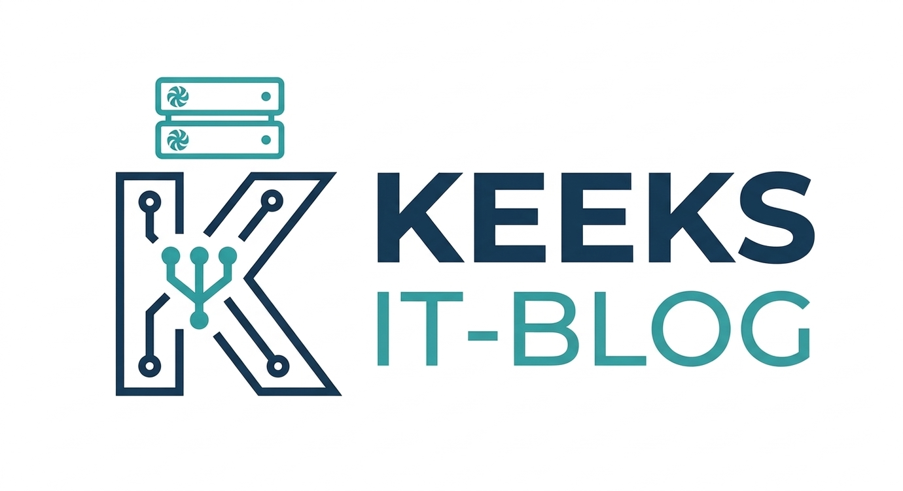

SAMBA Dateiserver Kurzanleitung
12.04.2026
SAMBA Dateiserver leicht gemacht:
In dieser Kurzanleitung erkläre ich wie man sich eine Dateifreigabe unter Samba einrichtet. Dies wird später noch sehr nützlich sein, Backups von z.B. einem Raspberry Pi im lokalen Netz zu sichern.